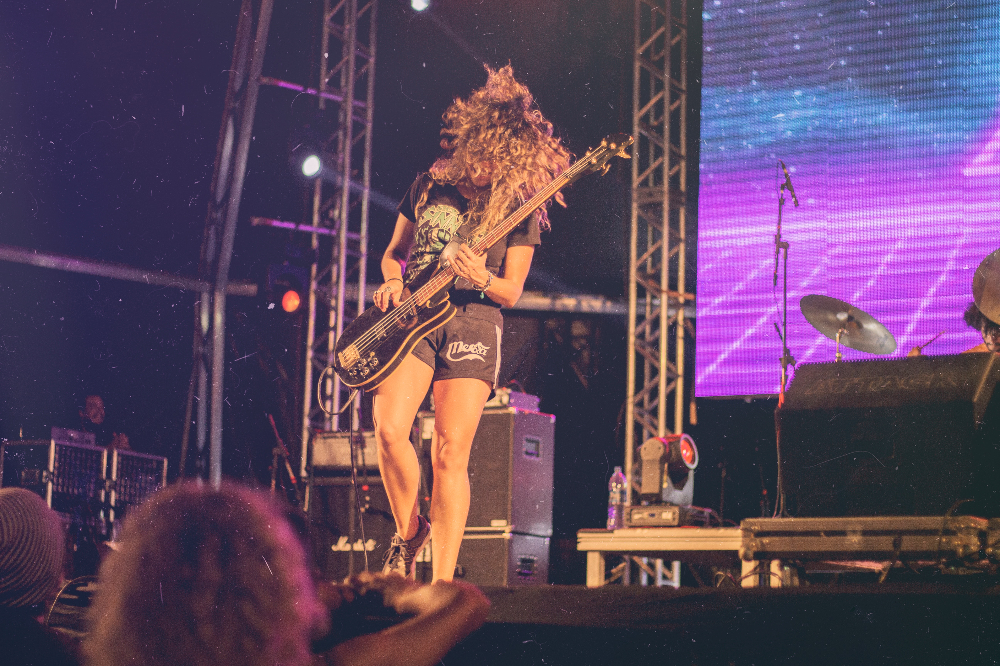

ARTISTS
ARTIST FROM ALL OVER THE WORLD

Peter McKinnonn
Peter McKinnon is a self Taught up-and-coming artist that is headlining the electric eel festival

Jock Boyd
Jock Boyd Is a classically trained violinist that experiments with electronic music to create a new wave of sounds.

Boris Brejcha
Boris Brejcha Is a singer songwriter that studied at the Australian Institute of music and has a wide vocal range.

DJ Muller
DJ Muller Is originally from the UK and primarily focuses on garage music style.

DJ Rekab
DJ Rekab Is well known for being featured in the recent Barbie movie, and there's a world renowned.

Emperors
Emperors First debut in Cirque du Soleil, and now perform stunts all over the world.

The Chevelles
The Chevelles Is a two man band that debuted the first album in 2011.

Coerce
Coerce Is it interpretive dancer that mixes classical music with interpretive dance.

Femme Fatales
Femme Fatales In electric guitarist, who holds the record for the fastest guitar player in the world.

Hawks of Alba
Hawks of Alba Is a country music singer who is new to the music industry and is becoming extremely popular.

The Thieves
The Thieves Ben, the originally comes from Nebraska and is known for the heavy metal music.

Aforemention
Aforemention Is one man show that demonstrates the talent and vocals of a young voice.